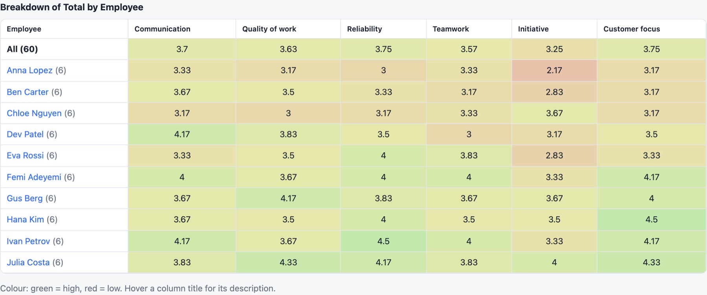
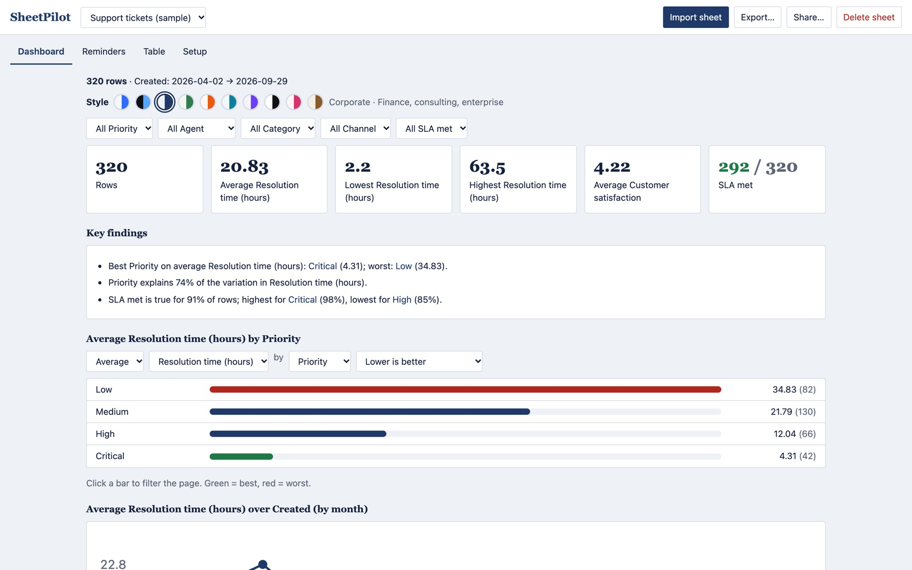

Drop in your sheet
Upload a CSV or Excel file, paste cells from Google Sheets, or try a sample. Messy headers, several tabs and day-first dates are all fine.
Free · Runs in your browser
Drop in a CSV or Excel file. SheetPilot works out what's in it, how it's calculated and what stands out, then builds an interactive dashboard in seconds. Your data never leaves your browser.
Most teams already keep what matters in spreadsheets. Getting an answer out of them means hunting for the right tab, rebuilding the same pivot tables, and explaining the formulas to whoever asked. Dashboard tools promise relief, then ask you to move everything first.
Upload a CSV or Excel file, paste cells from Google Sheets, or try a sample. Messy headers, several tabs and day-first dates are all fine.
SheetPilot works out what each column is, how the numbers are calculated, which direction is good, and what to compare. It tells you how it read the sheet, and you can correct it.
Click a bar to filter everything. Change the measure or grouping. Pick one of ten styles, from Corporate to Midnight, to match your team or brand.
Tick the sections you want and download a single web page or PDF. Or create a link: a view-only snapshot, or an interactive copy. No server, no account.
No upload · No sign-up · No formulas to write · No upload · No sign-up · No formulas to write ·
Just your sheet · Just the story · Just your sheet · Just the story · Just your sheet · Just the story ·
Finds the real header under title rows, merges repeated headers with their labels, handles semicolons and tabs, several tabs, and ambiguous dates.
Shows your real Excel formulas in plain words, or works out sums, ratios and products from the values, and flags rows that break them.
“Enterprise is 83% of revenue.” “No single region stands out.” Findings in plain language, including when there's nothing to see.
Clean, Midnight, Corporate, Forest, Sunset, Ocean, Violet, Mono, Rose and Paper, for different teams and brands. Exports keep the style.
Tick the sections you need and get one self-contained web page, a PDF or the filtered rows as CSV.
A view-only snapshot without raw rows, or an interactive copy people can filter. The link carries the data; there is no server.




Every choice is shown, flagged when it's unsure, and one click away from being changed. Your corrections stick.
Everything runs in your browser. Files are read on your device and never sent anywhere.
Nothing to sign up for, and nothing to pay. Open it and drop a file.
This website counts visits anonymously. The app itself has no analytics, cookies or ads.
A share link carries the data inside it, so only share what you're happy for the recipient to read.
Shared snapshots open in a sandbox with scripts switched off.
Read the code, run it yourself, or host it on your own site.
Spreadsheets are where most small teams keep their customers, tickets, reviews and numbers. They're flexible and familiar, but they only store information; they don't tell you what it means.
Most dashboard tools ask you to rebuild your data in their format first. SheetPilot starts from the sheet you already have, works out its structure and logic, and gives you the story: free, in your browser, with nothing to set up.
Free, open source, and ready in a few seconds.